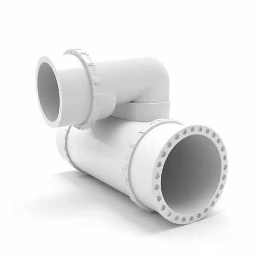
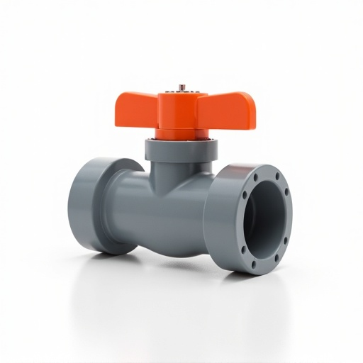
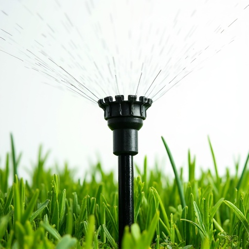
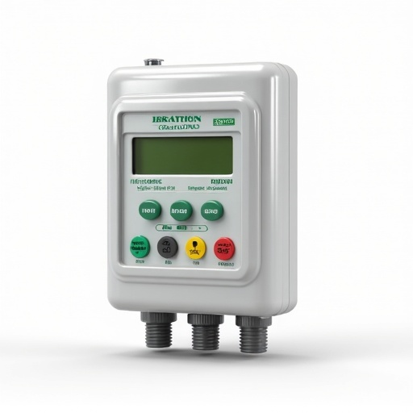
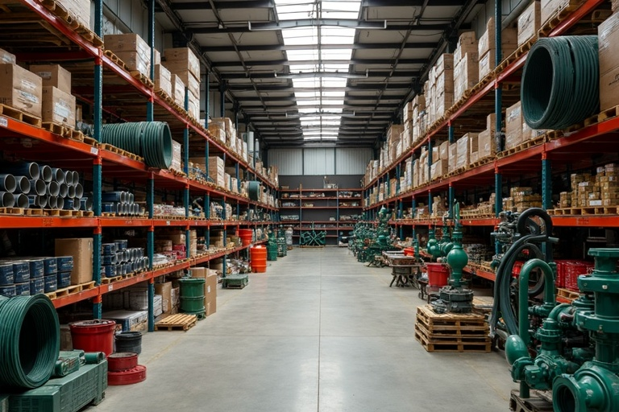

Más de 15 años suministrando tuberías, válvulas, aspersores y goteros de alta calidad para la agricultura moderna del Perú.

Tubería de PVC para sistemas de riego a presión, resistente a rayos UV y productos químicos...

Válvula de bola en PVC para control de flujo en sistemas de riego. Fácil operación y larga vida útil.

Aspersor emergente de 4 pulgadas con radio de cobertura de 3 a 5 metros. Ideal para jardines y áreas verdes.

Controlador programable de 6 zonas para automatización de sistemas de riego. Pantalla LCD y programación semanal.

AgroinPeru S.A.C. nació con la misión de proveer soluciones integrales de riego para el sector agrícola peruano.
Trabajamos con agricultores, empresas agroindustriales y proyectos de infraestructura, ofreciendo asesoría técnica especializada.
Nuestro equipo técnico te ayuda a diseñar el sistema de riego ideal para tu cultivo. Solicita tu asesoría gratuita hoy.